บทที่ 11 / 29
ทามามูชิซิตี้<Celadon City>
❖
สามารถเข้าไปสู้ในยิมได้เลย และอย่าลืมเอาตัวที่มีHM01ไปด้วย เพราะจำเป็นต้องใช้ ยิมนี้จะใช้โปเกมอนพืชโปเกมอนที่แนะนำคือ ไฟ น้ำแข็ง และพลังจิต ผู้นำยิมจะอยู่ตรงกลางของยิม ชื่อเอริกะ<Erika>
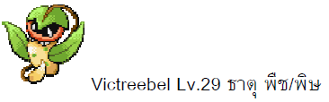
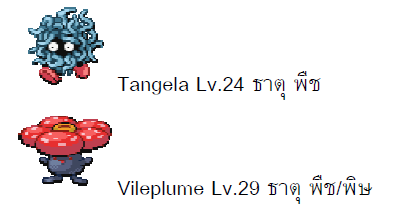
เมื่อชนะจะได้รับ Rainbowbadge ที่ทำให้ควบคุมโปเกมอนเลเวลต่ำกว่า50ได้ และทำให้ใช้ท่าดันหินได้ พร้อมตังค์2900เยน กับ TM19 Giga Drain
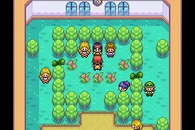
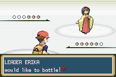
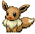
พอสู้เสร็จแล้วให้เราไปที่ตึกที่มีทางเข้าด้านหน้ากับด้านหลังข้างๆโปเกมอนเซนเตอร์<Celadon Manshion>เข้าทางด้านหน้า แล้วเข้าไปเอาน้ำชา<Tea> จากคุณยาย แล้วเข้าทางด้านหลัง ขึ้นไปบนดาดฟ้า จะ ได้รับโปเกมอนที่ชื่อ อีวุย<Eevee> มา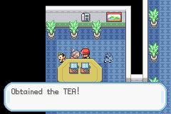
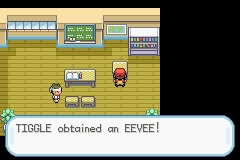
จากนั้นลองแวะห้างสรรพสินค้าดู จะมีไอเท็มขายมากมาย รวมทั้งหินพัฒนาร่างชนิดต่างๆ ที่ชั้นดาดฟ้าจะมีตู้ขายน้ำอัตโนมัติ ซื้อมาชนิดละอัน แล้วคุยกับเด็กผู้หญิง จะเป็นการแลกเครื่องดื่มกับ TM16, 20, 33
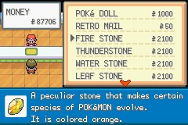
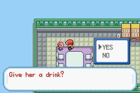
แล้วให้เข้าเกมคอร์เนอร์(สล็อตแมชชีน) ซึ่งอยู่ตรงกลางของเมือง อยู่ด้านขวาของบ้านที่มีแม่น้ำกั้นอยู่ ข้างใน จะมีเคาน์เตอร์แลกเหรียญ และเครื่องเล่นสล็อตแมชชีน ให้คุยกับคนข้างในทุกคน จะมีบางคนให้เหรียญมา ฟรีๆ เราสามารถแลกเหรียญกับโปเกมอนหรือไอเท็มได้ที่บ้านข้างๆ ส่วนวิธีเล่นคงรู้กันนะ ^^" จะเจอคนในทีมร็อคเก็ตยืนอยู่หน้าโปสเตอร์ด้านบน ให้เราคุย เขาจะท้าสู้กับเรา ให้เราสู้ พอสู้เสร็จแล้วให้คุยกับโปสเตอร์ จะมีบันไดขึ้นมาทางด้านขวา
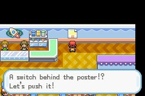
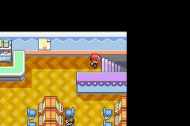